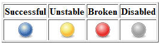
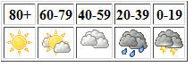

Jenkins的安装和功能介绍
Jenkins是一个开源软件项目，前身是Hudson，是基于Java开发的一种持续集成工具，用于监控持续重复的工作，旨在提供一个开放易用的软件平台，使软件的持续集成变成可能。通常与版本管理工具(SCM)、构建工具结合使用；常用的版本控制工具有SVN、GIT，构建工具有Maven、Ant、Gradle。 持续集成(CI：Continuous Integration)是一种软件开发实践，即团队开发成员经常集成他们的工作，通常每个成员每天至少集成一次，也就意味着每天可能会发生多次集成。每次集成都通过自动化的构建（包括编译，发布，自动化测试）来验证，从而尽早地发现集成错误。
Jenkins的下载和安装
1、Jenkins的下载地址：https://jenkins.io/zh/download/ ，多个版本可选，以下教程均以Jenkins 2.175 windows版本为例。
2、下载完成后直接双击 jenkins.msi 即可进入安装程序，安装过程中会创建一个Jenkins windows服务，安装完成之后会自动在浏览器中打开Jenkins的可视化操作界面，默认端口为8080。如何修改默认端口8080
- 关闭Jenkins服务，可手动关闭也可通过命令行net stop jenkins；
- 安装目录下找到文件 jenkins.xml，并修改文件中 arguments 节点上的默认--httpPort=8080端口改成其他端口，如1080；
- 执行命令 net start jenkins或手动开启Jenkins服务；
Jenkins初始化
1、解锁Jenkins，首次使用会要求解锁Jenkins，根据界面提示在安装目录下找到initialAdminPassword文件，将里面的内容复制到输入框内，点击继续。
2、安装插件，这里有两种选择，一种是推荐的插件，一种是自己选择插件，推荐使用第一种方式，毕竟插件太多了，我们先安装些基础的，如果在安装过程中出现部分插件安装失败没有关系，可以选择重试也可以进入下一步，后面还可以在插件管理中陆续安装不用担心。
3、创建用户，可以选择使用admin账号继续，也可以自己创建管理员账号，需要注意的一点是如果自己创建了管理员那么Jenkins会删除admin账号，所以还是推荐使用admin账号继续。
4、实例配置，使用默认配置，保存并完成。Jenkins基本功能介绍
1、新建任务，新建一个执行任务(又称为作业)，通过设计执行触发器与步骤，利用各种插件和命令完成指定操作。当构建任务时，Jenkins会在安装目录下的
workspace文件夹下建一个与任务名称相同的文件夹用来存放此任务相关的文件，如通过Git获取的源码等。
2、用户列表，展示当前所有用户，但不是每个用户都可以登录，可登录用户参考用户管理。
3、构建历史，通过图表来展示所有构建过的作业的名称、执行时间以及执行状态。
4、系统管理，通过此功能来全局管理Jenkins，包括系统设置、全局安全设置、全局工具配置、插件管理等。
5、我的视图，展示所有已经构建好的任务，展示各个任务的最新执行情况以及正在构建的任务。
6、构建状态说明，Successful:完成构建，且被认为是稳定的。Unstable:完成构建，但被认为不稳定。Failed:构建失败。Disabled:构建已禁用。
7、构建稳定性说明，Jenkins会基于一些处理器任务为构建发布一个稳健指数 (从0-100 )，分数越高，表明构建越稳定。下图中分级符号概述了稳定性的评分范围。任何构建作业的状态(总分100)低于80分就是不稳定的。
Jenkins新建一个简单的任务，实现在控制台输出本机IP地址详细信息实例
1、新建任务，输入一个任务名称，如：“smart_ip_cmd”，选择
构建一个自由风格的软件项目，点击确定进入配置界面。
2、General（概述），在此填写任务的基本描述，说明任务要做什么。
3、构建，增加构建步骤，这里我们选择“执行windows批处理命令”，输入命令行 ipconfig，点击保存后进入任务详细面板，在这里我们可以修改任务配置，构建任务以及查看构建历史等。
4、立即构建，点击立即构建，我们可以看到构建历史（Build History）多了一条记录，我们可以选中构建记录查看构建情况。
5、控制台输出，选择控制台输出可以查看本次构建的输出结果，失败还是成功。Jenkins补充说明
1、相对路径的概念：在Jenkins中当我们新建一个任务时，Jenkins会在安装目录的workspace文件夹下建一个与任务名称相同的文件夹，而我们在构建中执行命令行时均是在任务名称这个目录下执行的，如任务名称叫“smart_micro_site_service”，那么执行xcopy命令实际上是这样：
C:\Program Files (x86)\Jenkins\workspace\smart_micro_site_service>xcopy 文件相对路径 "目的路径" /e /y，总结来说相对路径即相对于工作空间的路径。End